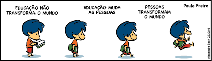

Quadrinhos

Passarinhos - Obrigado, Paulo Freire
PUBLISHNEWS, ESTEVÃO RIBEIRO, 24/09/2021

Paulo Freire completaria 101 anos
Segue vivo conosco
Danielle Caregnatto.

Nesses tempos de angústia
Paulo Freire é imprescindível!